munni — user guide
How to use the app, screen by screen. ← back to the app
Getting started
munni is local-first: everything lives on your device and works offline; signing in adds sync between your devices. Try the demo from the login screen — it resets itself on sign-out — or create an offline profile that never touches the network; a device can hold several offline profiles, each a fully separate world (spaces inside one profile are the way to split bookkeeping — Mina double-checks before you mint a second world). Right after the first-run setup, Mina — munni's assistant — walks you through spaces, accounts and your first transaction on the real screens; everything the tour makes can be undone at the end.
- Install munni as an app (Help → Install as app): you get a clean full screen and your data is protected from browser cleanups.
- Replay the Mina tutorial any time from Help — it fast-forwards past what already exists.
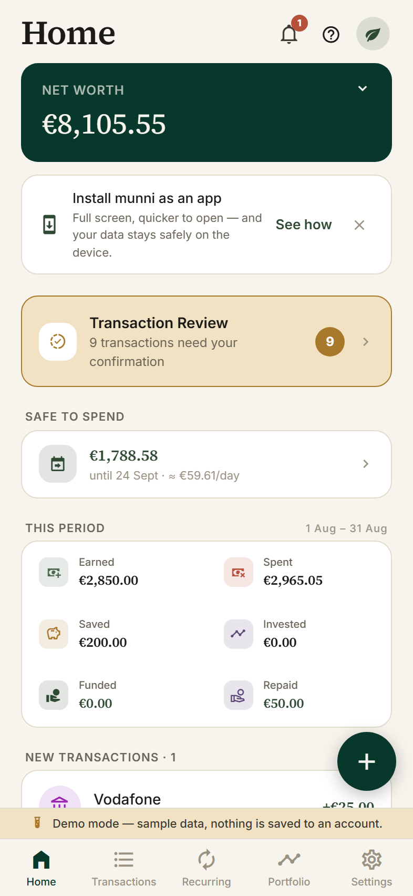
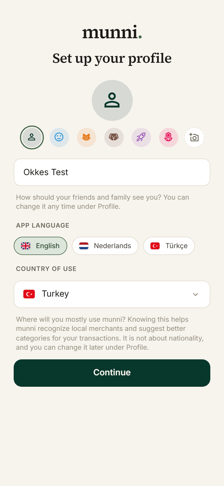
Home is yours
Home is a landing zone of blocks: review queue, this period, new transactions, budgets, upcoming costs and more. Reorder or hide blocks with Customize Home at the bottom. The avatar on the top right switches spaces.
- The balance band folds out to show every account — and you pick what the big number MEANS per space: net worth, total cash, safe to spend, or hand-picked accounts, with a per-account say in the sum.
- Portfolio has its own tab at the bottom.
- The bell has two tabs now: Notifications collects release news, due reminders, the interest-rate nudge and the weekly digest (a numbered badge counts what you haven’t seen — opening the tab clears it), and Activity keeps the space’s audit trail with who did what.
- The space switcher tells you what each space would ask of you — a “N to review” pill and a red dot for a busted budget — and the avatar wears a dot whenever another space needs attention.
- Pick a display currency on your profile to read every amount in one currency, marked ≈ — your data keeps its own.

Connecting your bank
Settings → Global settings → All accounts. Connect a bank (read-only PSD2 access — munni can never move money) or import statements (CAMT.053, ING CSV or a PayPal activity export — several files at once) for accounts your bank won't share; those are global, listed first. Manual cash/savings accounts live INSIDE a space — the overview lists them under their space, and creating one takes you to "This space's accounts" (the wallet icon; the bank icon is the global overview). Bank data lands once per account; each space picks its accounts with a start date, or detaches them when no longer needed. A freshly connected account attaches to the space you started from by itself.
- New transactions arrive automatically several times a day.
- Reserved (not yet booked) card payments show with a badge and disappear when the real booking lands.
- Each account row shows when the bank last answered — a Reconnect hint appears when a consent has gone quiet.
- Imported accounts warn when their data has gone stale: an export from weeks ago imports fine but silently misses everything after it — the preview and the account row both tell you where the data ends.
- Connected the bank after importing statements? munni offers a reconcile pass: the bank is the truth, your edits move over, and you review every mismatched row before it is removed.
- Each upload is a batch on the account sheet — see who uploaded what, and roll a bad upload back out.
- In a shared space, connecting or importing asks a conscious yes first — bank data becomes visible to every member; manual accounts stay quiet.
- A transfer can create its counterparty on the spot through the one Create door: bank connect, statement import (it attaches to the space you are in) or a manual account.
- A loan IS an account now: create it once (loan, mortgage or credit card) and it appears on the Debts screen by itself — transfers to it are the payments, and munni nudges weekly until the interest rate is filled in (0% counts). Credit cards join the debts view only when you give them a debt story or flip "Track as debt" on the account.
- Leave a loan’s payment fields empty and the plan — amount, rhythm, payoff date — is estimated from the payments themselves; debt payments without a counter account gather under “Unassigned payments” until you file them.
- A recurring cost owns a category: linked transactions file under it automatically, with expected reimbursement as the one allowed override.
- Recurring-cost detection reads your full bank history — charges older than the space’s start date count as pattern evidence (that’s how yearly subscriptions get spotted) while your lists stay clean; accepting a suggestion links only the visible payments.
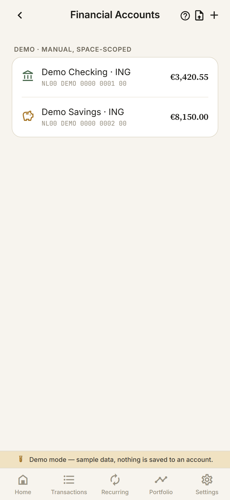
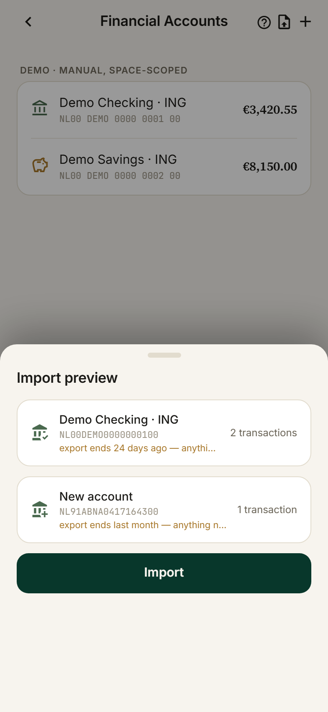
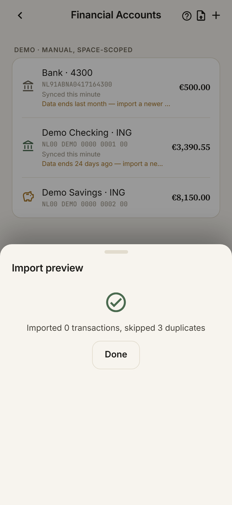
Reviewing transactions
The review deck shows one transaction at a time with a suggested category and the reason behind it. Everything you change — kind, counterparty, category, splits — stays a draft until you hit Confirm. "Also apply to similar" catches the rest of the same merchant in one go.
- Tap the description to read the full bank text.
- Skip is honest: it leaves no trace and the card returns later.
- The card leads with the kind: Standard files itself as income or expense by the sign; Transfer asks for the counterparty and derives saving, investment or debt payment from it — or pick "No counter account" and name the kind directly.
- A loan counterparty turns the card into a debt payment: it shows which debt it pays and the recurring link steps aside.
- Missing a category, recurring cost or event? Create it right from the picker — the card keeps your place.
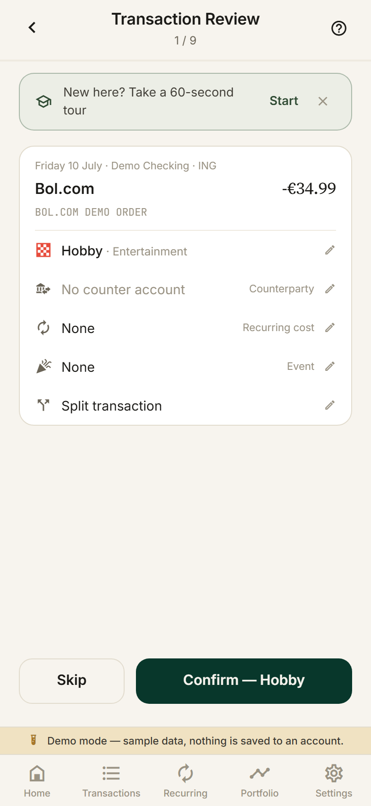
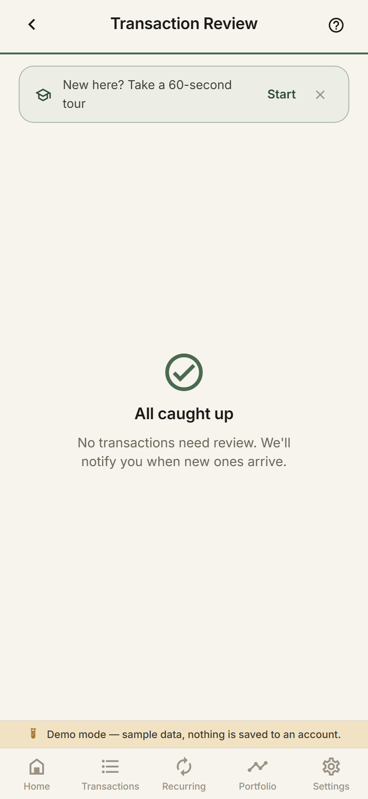
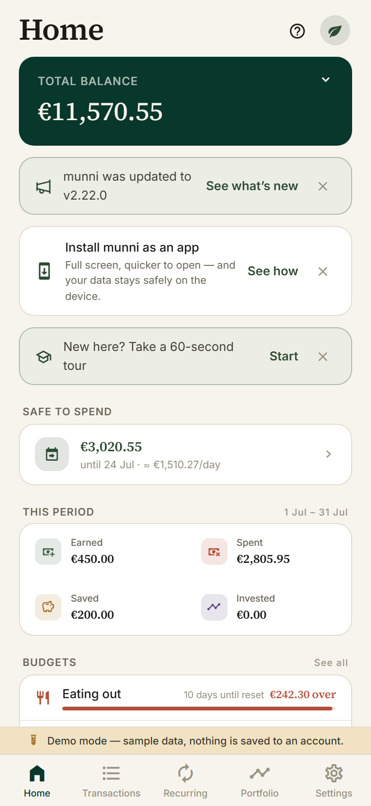
Transaction details
Open any transaction to recategorize, split across categories, set its kind (Standard, Transfer or — on manual rows — Adjustment; a Transfer names the counterparty account, which decides saving, investment or debt payment — or carries no counter account at all and just says which kind it is), attach receipts, link recurring costs or events, and record reimbursements that show the net cost. Settled value moves into the special Reimbursed category — real categories keep only what you truly paid — and the transactions tab has an "Unsettled reimbursements" quick filter for everything still waiting on money.
- Search matches amounts too: typing 10 finds 10.99 and 210.15.
- A transfer between two of your accounts shows as ONE row ("Checking → Savings"); filtering by account brings each leg back. Saving a transfer to a manual account can write the matching transaction in the same stroke.
- If the counterparty is one of your own accounts, its row becomes tappable.
- Recategorizing offers a bulk apply — tap the bar to pick exactly which transactions it touches.
- "Customize this view" reorders or hides the sections below the details.
- Rename a transaction via the pencil — munni remembers and auto-renames future arrivals; the bank original stays under Details.
- Linking a reimbursement opens its own screen: search by name or amount, or take the suggestion — munni spots likely matches by timing, wording and size.
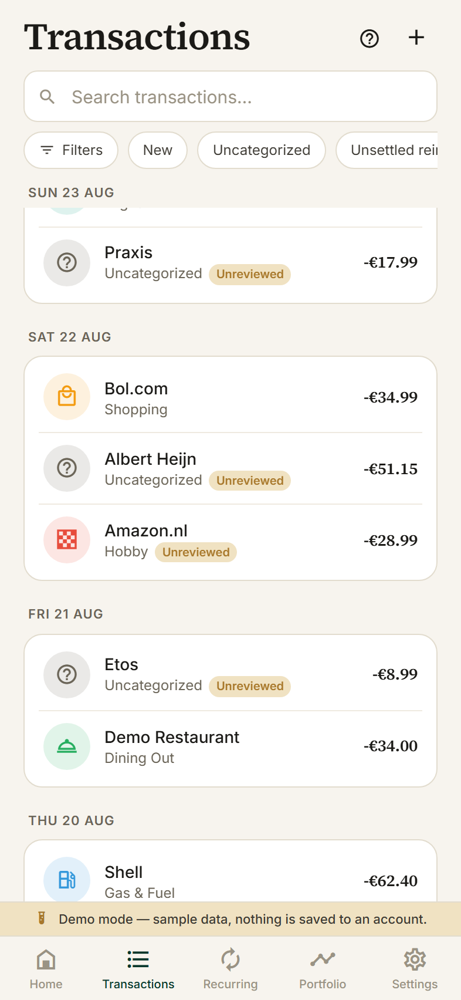
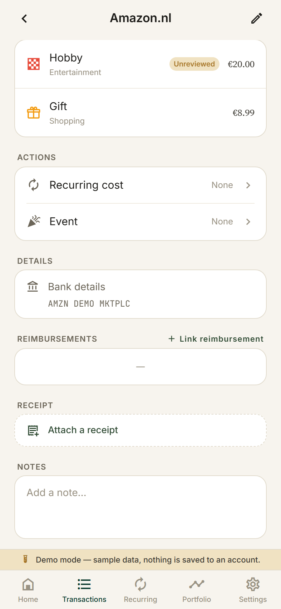
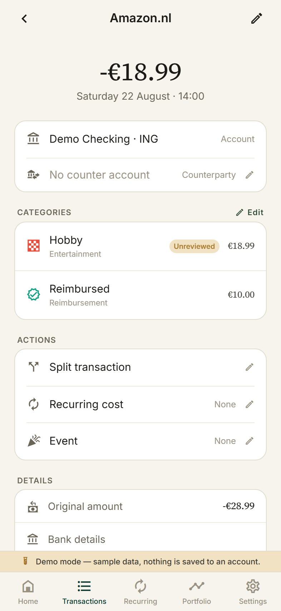
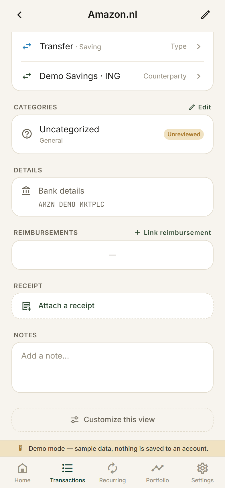
Spaces & sharing
Spaces are separate bookkeeping areas — personal, household, a trip. Creating one is a full form now: name, icon and color, budget period, ledger currency and history start, all prefilled with sensible defaults so "type a name, press Create" still works. Invite friends into a shared space: everyone sees the same transactions but each space keeps its own categories and budgets. Attach a bank account to any number of spaces, each with its own history start. The card at the top of the Settings tab opens the space's own settings (name, image, color); its budget period, currency and default history start are separate settings right below it.
- New spaces start locked private — nobody can be invited until the owner unlocks sharing in the space’s settings.
- Roles: owners manage members, contributors edit, readers only look.
- Leaving a space archives your attached accounts for the others instead of deleting history.
- Moving the history start counts its consequences before anything happens: bank rows hide but stay stored, manual rows before the date are deleted with a warning, and moving it older surfaces stored rows again. Manual transactions dated before the start are refused with a one-tap "move the start here" way out.
- The budget period screen has its own tutorial — tap the ? up top.
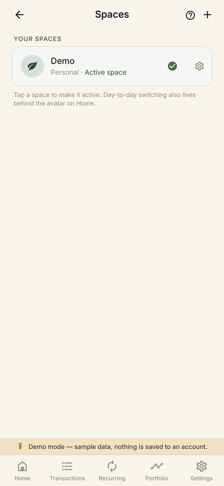
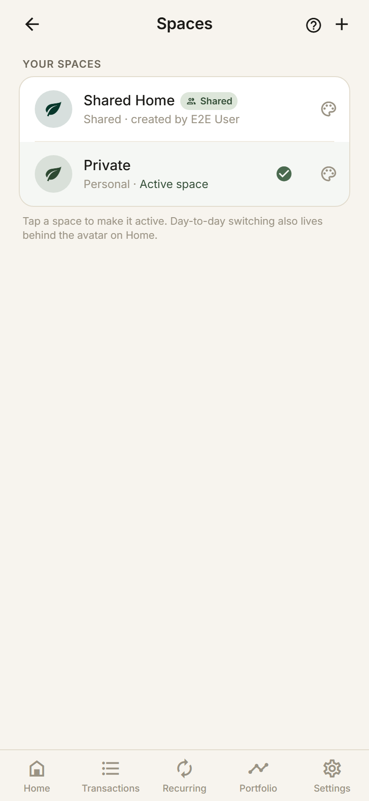
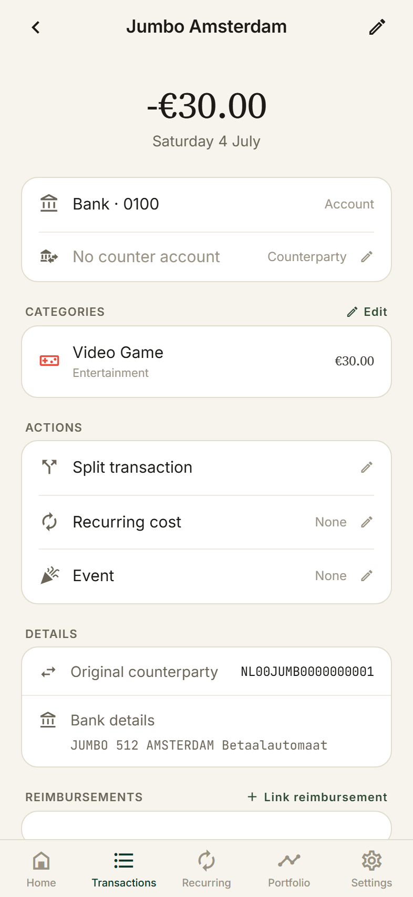
Splits — settle up with any group
Settings → Splits creates a shared tab for a trip or a night out. Add who paid what — typed in, or picked straight from your own transactions — and the ledger works out who owes whom with the fewest possible transfers. Adjust shares when a split isn't fifty-fifty; shares are locked in when an expense is added, so people joining later never rewrite history. Splits need a connection and a signed-in account.
- Invite anyone with one share link — no friendship needed; joiners pick which of their own spaces the split attaches to.
- Link a split to one of your events: searched-in expenses join the event automatically, and the event page shows who owes whom.
- Members of a split see only the split — never your spaces, accounts or transactions.
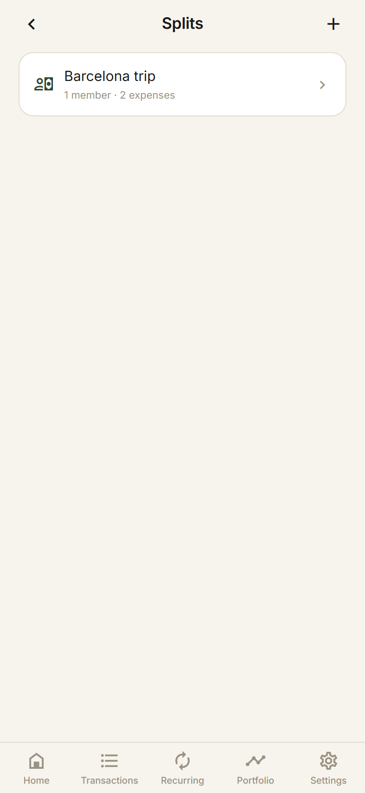
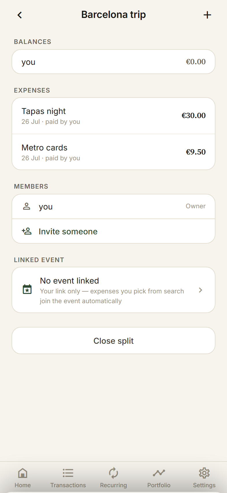
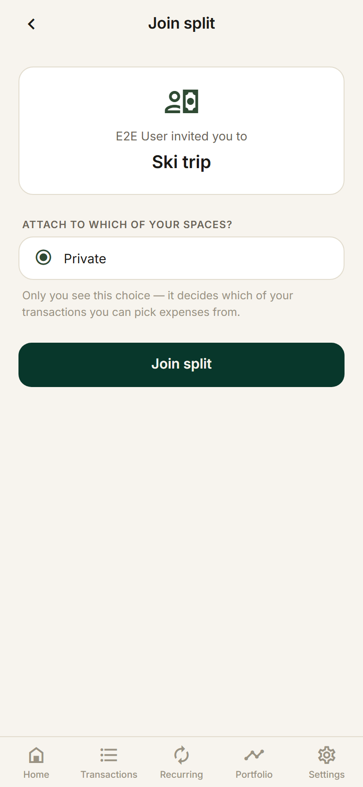
Categories & budgets
The built-in catalog covers most spending; create your own main or sub categories when it doesn't. Budgets track a limit per category per period, and the overview drills from totals into categories into transactions.
- munni learns from you: confirm a merchant twice and it skips review next time — across all your spaces.
- Can’t find a category while reviewing? The picker offers "create your own" right there.
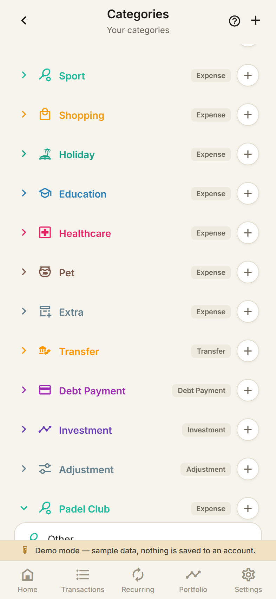
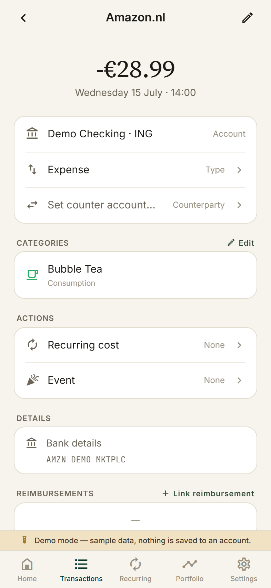
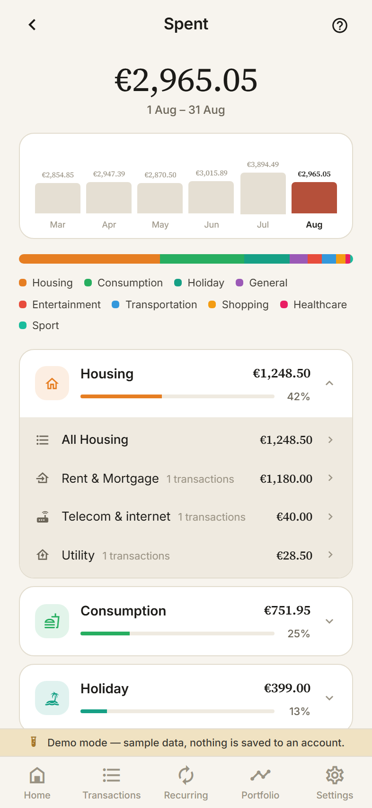
Trends, forecast & export
Settings → Trends charts your spending per category over the months, income against expenses, and your net worth over time. Home's "Safe to spend" block tells you what is really free until payday — tap it for the full breakdown. And under Global settings → Export data your transactions leave as CSV or a JSON backup, straight from the device.
- Subscriptions show their yearly cost, and a sustained price change badges itself with the yearly damage.
- The net-worth Home block is opt-in via Customize Home.
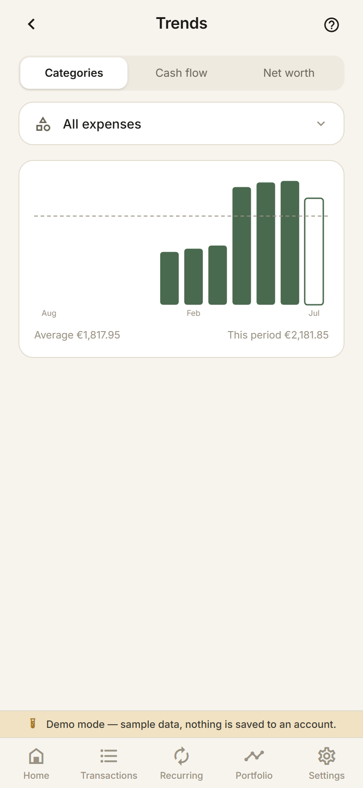
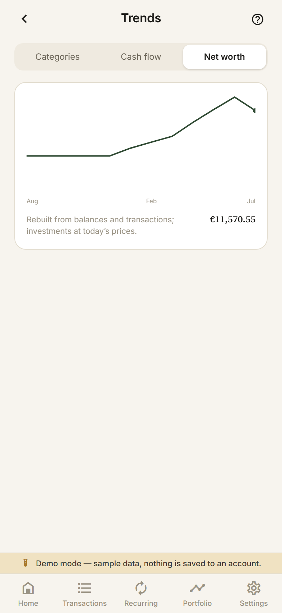
Devices & offline
Signed in, every device converges on the same data — edits made offline sync when you're back. Two people can edit the same transaction at once; the newer edit per field wins everywhere, identically. And if you ever want out of the cloud entirely, Profile → Go offline converts your account into a device-only offline profile: everything stays, bank-linked accounts become manual, your server data is erased, and other signed-in devices wipe themselves on their next sync.
- Push notifications tell you when new bank transactions arrive.
- The sync card at the top of Settings shows the last successful sync.
- Profile → Devices lists every device signed in to your account — rename them, and disconnect one remotely: it erases its munni data the next time it connects.
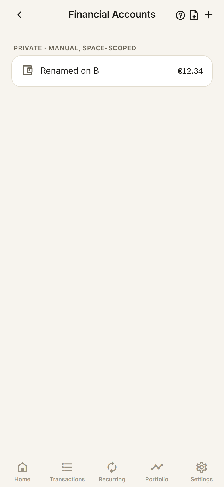
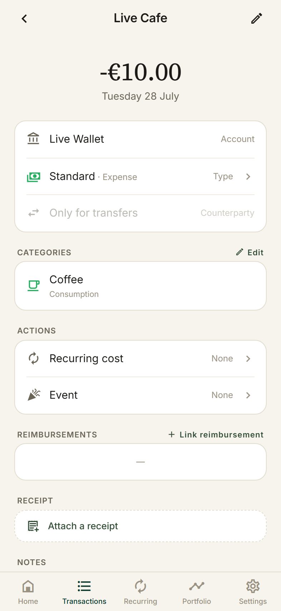
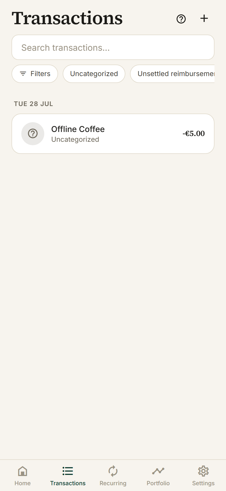